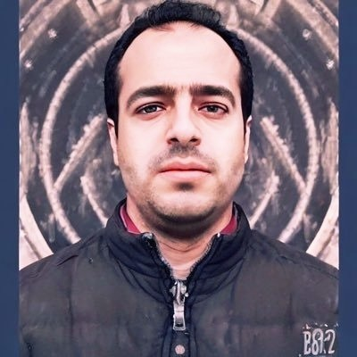

Hamada M. Zahera
Senior Associate Staff and Lead of the NLP Unit, Data Science Group (DICE), Paderborn University

Paderborn University
Paderborn, Germany
👋 Hi! I am a researcher in natural language processing and knowledge graphs. Since March 2024 I lead the NLP unit of the Data Science Group (DICE) at Paderborn University, where I co-supervise PhD researchers and lead the NLP work in funded research projects.
My work connects large language models with knowledge graphs. Current topics include:
- question answering and retrieval over knowledge graphs, including text-to-SPARQL
- information extraction: entity linking, relation extraction, keyphrase extraction
- knowledge editing and reliable, verifiable LLM outputs (including conformal prediction)
- multilingual LLMs and ontology learning
I received my PhD (Dr. rer. nat.) in Computer Science from Paderborn University in 2023, supervised by Prof. Axel-Cyrille Ngonga Ngomo and funded by a DAAD doctoral scholarship. Before that, I studied Computer Science at Menoufia University, Egypt.
news
| Oct 2026 | 🎮 New interactive demos for our work on results-aware SPARQL embeddings. |
| Oct 2026 | 📄 New preprint: Scaling Multilingual Mixture-of-Experts, on how language coverage changes capacity and compute allocation. |
| 2026 | 🏆 MARS, multi-hop adaptive retrieval and SPARQL generation for KGQA, accepted at EKAW 2026 and nominated for the best paper award. |
| 2026 | 🎉 Paper on document-level relation extraction with knowledge graph feedback accepted at ESWC 2026. |
| 2025 | 🧠 Our benchmark for knowledge editing with logical rules appears at ISWC 2025. |
| 2025 | 🌍 Two papers at COLING 2025, including LOLA, an open-source massively multilingual LLM. |
| Mar 2024 | 🚀 Started leading the NLP unit of the DICE group at Paderborn University. |
selected publications
Full list on Google Scholar and DBLP.
- arXivScaling Multilingual Mixture-of-Experts: How Language Coverage Changes Capacity and Compute AllocationarXiv preprint, 2026
- EKAWMARS: Multi-hop Adaptive Retrieval and SPARQL Generation for KGQAEKAW 2026 🏆 Best paper nomination
- ESWCDocument-Level Relation Extraction Using Reinforcement Learning with Knowledge Graph FeedbackESWC 2026
- ISWCBenchmarking Knowledge Editing using Logical RulesISWC 2025
- COLING
- COLINGContextual Augmentation for Entity Linking using Large Language ModelsCOLING 2025
- ESWCANTS: Abstractive Entity Summarization in Knowledge GraphsESWC 2025
- IEEE AccessMultilingual Relation Extraction: A SurveyIEEE Access, 2025
- EMNLPError Analysis of Multilingual Language Models in Machine Translation: A Case Study of English–AmharicEMNLP 2024
- WWWUniversal Knowledge Graph EmbeddingsCompanion Proceedings of the ACM Web Conference (WWW), 2024
- EKAWUniQ-Gen: Unified Query Generation across Multiple Knowledge GraphsEKAW 2024
- SEMANTiCSGenerating SPARQL from Natural Language Using Chain-of-Thoughts PromptingSEMANTiCS 2024
- ISWCMultPAX: Keyphrase Extraction using Language Models and Knowledge GraphsISWC 2022
- K-CAPASSET: A Semi-supervised Approach for Entity Typing in Knowledge GraphsK-CAP 2021
demos
🔍 Two SPARQL queries can look almost the same but return different answers, or look very different but return the same answers. That makes plain text similarity a weak signal when you want to find, reuse or cache similar queries.
In Contrastive Learning for Results-Aware SPARQL Embeddings, we run queries from real query logs, label pairs of queries by how much their answers overlap, and fine-tune encoders so that queries with similar answers end up close together. At query time, only the query text is needed. These interactive demos let you explore the idea in your browser:
See why text similarity is a poor signal for query similarity, and compare a map of real SQuARE test queries under text-based and results-aware embeddings. Impact on retrieval and caching
Look at real queries where text similarity retrieves the wrong query, and see how fine-tuning changes retrieval and result-cache decisions.
Start from the demo overview or browse the code on GitHub.
projects
Research projects
- KI-Akademie OWL
Safe and resource-efficient AI for companies, education and society. My work covers KG question answering, entity linking, knowledge editing and secure retrieval-augmented generation for enterprises. - IKDS
A dialogue system that uses a company's own knowledge graph to help optimize machines in operation, built together with industry. - ENEXA
Efficient explainable learning on knowledge graphs. I am responsible for the NLP work package. - LOLA and PORQUE
An open-source multilingual LLM, and multilingual question answering over knowledge graphs. - DAIKIRI
Diagnostic AI and embeddings for industrial data.
Open source
- SPARQL-Embeddings
Contrastive embeddings of SPARQL queries by result similarity, combining a CodeBERT text encoder with a GATv2 graph encoder, trained on DBpedia and Wikidata query logs. - LOLA
Training code for an open multilingual mixture-of-experts LLM covering 160+ languages. - BibCleaner
A Python toolkit (CLI, library and web API) that fixes and enriches BibTeX metadata. - latex-auto-sync
A VS Code extension that keeps LaTeX projects synced with GitHub.
cv
Experience
Education
Service
Area Chair at EACL. Program committee member for ACL, EMNLP, COLING, NeurIPS, AAAI, ISWC and ESWC.